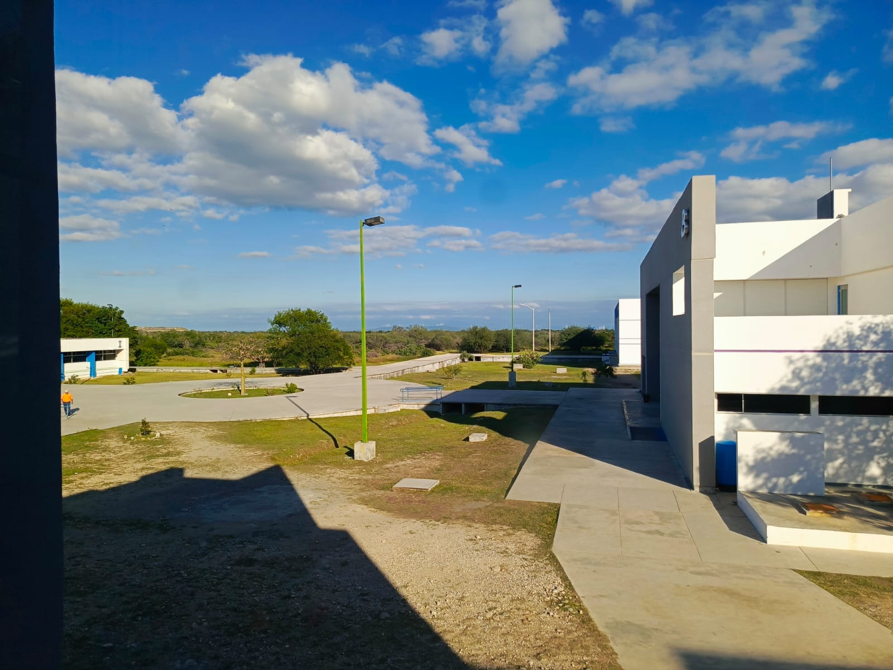
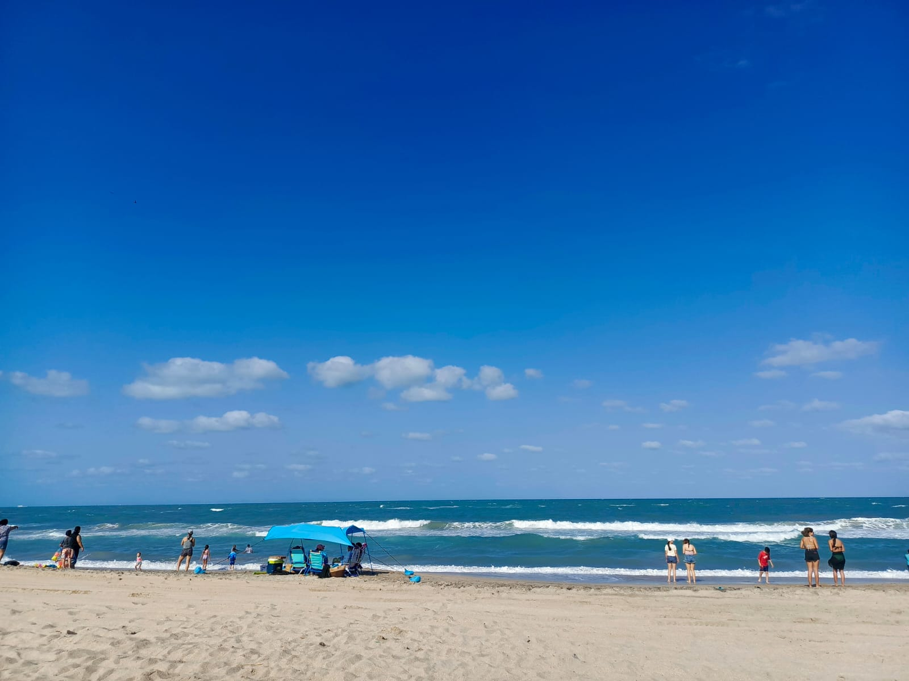

-
9 de Junio del 2024 20:43Anna Rivera 3,282 Views
Universidad Politecnica de Victoria
Hermosa foto que tome un dia cuando recien llegue a la uni, fue a las 1:00 pm a la hora de mi ultima clase.

-
11 de Junio 2024 09:13
 Nuria Aguilera
8,282 Views
Nuria Aguilera
8,282 Views
Playa escondida, Tampico, Tamaulipas.
Foto de mi ultimo viaje a la playa, hermosa experiencia junto a mi familia.
